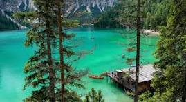

Alpine Emerald: The Untouched Magic of the Lake
There's a specific shade of green that exists only here, where the Dolomites meet the water: a brilliant, almost unreal turquoise. I found this sublime view nestled among the mountains, and it promises a silence broken only by the paddle touching the water. The lake is framed by towering rock faces that reflect onto the smooth, mirror-like surface. Right on the edge, a small wooden boathouse on stilts and a single red canoe create a perfect contrast with the wild surroundings. Peering through the tall pine trees framing the view gives you the feeling of having discovered a secret place. This is not a place to rush; it is a place to feel. I invite you to rent a boat, row slowly towards the center, and let the majesty of the mountains surround you. It is true alpine therapy, an oasis of peace and saturated color.
Torna a gli articoli